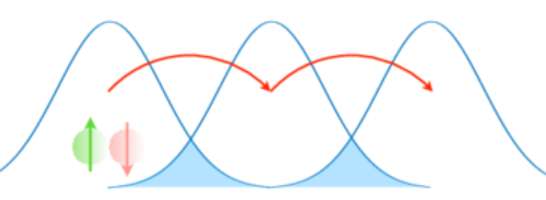

Physics is the natural science that studies matter, its fundamental constituents, its motion and behavior through space and time, and the related entities of energy and force. The most famous equation demonstrating the mass-energy equivalence is:
$$E = mc^2$$
At the high school level, classical mechanics introduces us to the equations of motion. For an object under constant acceleration, the final velocity can be calculated using this kinematic formula:
$$v^2 = u^2 + 2as$$
To simplify the study of dynamical systems we will divide it into six main parts depending on weather we are studying single/many body, at low/high speeds and if we are in the quantum/classical limits. For three out of four forces we have experimentally verified Quantum Theory. For the forth force of Gravity we a very beautiful classical theory by Einstein whose Quantum Part is yet to be discovered experimentally but still we have really a very strong candidate called String Theory which is mathematically consistent and brings all forces unders one formalism. For now we will be exploring these experimentally verified regims :
$$...$$
Condensed matter research often explores strongly correlated electron systems. For example, the Hubbard Model Hamiltonian, which captures the transition between conducting and insulating systems, is defined as:

$$H = -t \sum_{\langle i,j \rangle, \sigma} (c_{i\sigma}^\dagger c_{j\sigma} + h.c.) + U \sum_i n_{i\uparrow} n_{i\downarrow}$$
Solving for the exact ground state energy of such systems can be achieved through computational approaches like Exact Diagonalization in Fortran, or by mapping the problem to quantum circuits using Qiskit and applying a Variational Quantum Eigensolver (VQE).